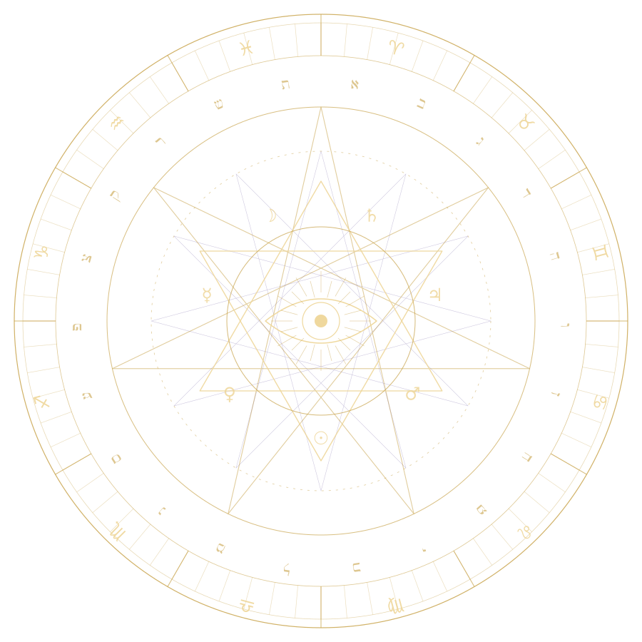
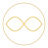
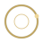
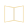

The hidden sciences,
read as a single language
Five bodies of work sit in this cabinet: Jung on the archetypes, Wilhelm on the Book of Changes, Steiner on the invisible members of the human being, Crowley on will, Blavatsky on the ancient wisdom. They disagree about almost everything. They agree that the soul thinks in images.
Each room keeps its own weather
Nothing here is harmonised into one system. Jung read the occult as psychology, Crowley read psychology as magick, Steiner claimed direct clairvoyant research, Blavatsky claimed transmission from teachers she would not name, and Wilhelm carried a Chinese book of bronze age divination into German prose that then shaped a century of Western symbolism. Their quarrels are part of the material.
The Archetypes
Shadow, anima and animus, persona, the Self. The structures that dream us, and the long argument called individuation.
II · WilhelmThe Book of Changes
Sixty four hexagrams, the trigrams behind them, and a working oracle you can cast by the coin method here.

III · SteinerAnthroposophy
Fourfold body, twelve senses, the exercises of the inner path, and a science of the invisible that insisted on rigour.
IV · CrowleyThelema
True will against mere appetite, the grades of the A.'.A.'., the Thoth trumps, and a reading you can draw from them.

V · BlavatskyTheosophy
The seven principles of the human being, the planes, karma and cycles, and the claim that all religions are dialects of one doctrine.

VI · ApparatusThe Library
Sources, editions, a note on method, and a plain caution about what this material can and cannot do.
Instruments, not decorations
Symbols were never meant to be looked at only. They were meant to be used: cast, traced, cut, spoken, carried. Four rooms in this cabinet are practical.
- The lexicon gives the planetary, zodiacal and alchemical signs with both their traditional and their psychological readings, and an interactive Tree of Life with its twenty two paths.
- The hierarchies lists the seventy two spirits of the Ars Goetia, each with a seal drawn on the spot, beside the seven planetary intelligences and their magic squares.
- The sigil workshop turns a statement of intent into a figure by three methods: the rose wheel, the planetary kamea, and the fused monogram. You can download the result.
- The rites sets out the banishing pentagram, the middle pillar, active imagination and the discipline of the record.

The alchemists were right: there is gold in the base matter. They were wrong about where the retort stood. The working assumption of this cabinet
Read as image
A symbol is not a code with one answer at the back of the book. It is a pressure under a picture. The test of a reading is whether it moves something.
Read historically
Every claim here has a date, an author and an interest. Where a tradition is making a factual claim about the world, this cabinet says so and leaves it standing as a claim.
Read honestly
None of this replaces medicine, law or judgment. The tradition itself is full of warnings about the person who confuses inflation with initiation.
A note on use: the material in this cabinet is offered for study, reflection and craft. It is not medical, psychological, legal or financial advice, and no ritual here is a substitute for care from a qualified person. See the caution.